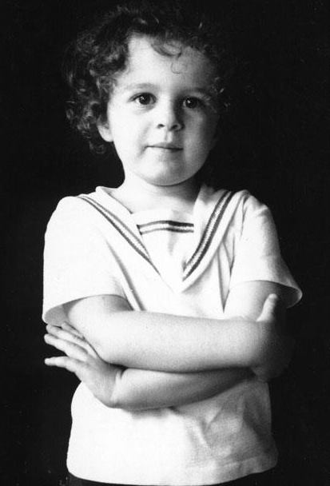

Already had opinions.
More to come here — on an unusual upbringing, a world-famous designer for a father, living overseas and across the U.S., and what all of that did to a person's perspective on creativity, originality, and deep dives into things that matter.